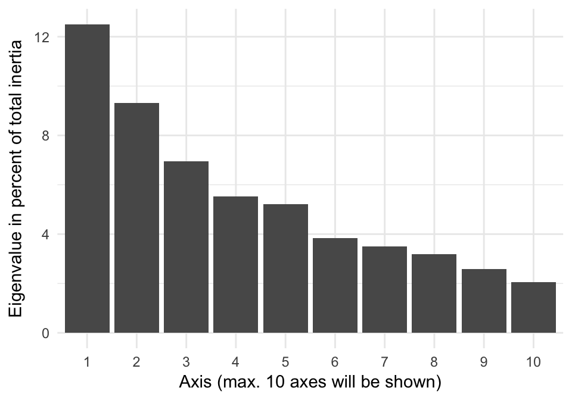
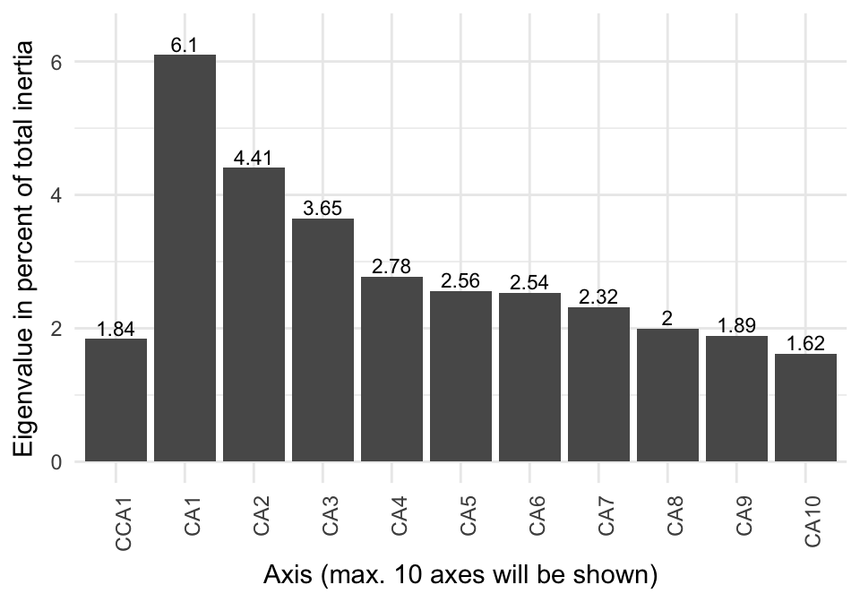

1
Introduction
1.1
The history of wastewater treatment and the activated sludge process
1.2
Identification of microorganisms in activated sludge
1.3
Purpose
2
Ordination in Microbial Ecology
2.1
Exploratory vs. Explanatory
2.2
Niche theory and the double-zero problem
2.3
Distance-based ordination
2.3.1
Principal Coordinates Analysis
2.3.2
non-Metric Multidimensional Scaling
2.3.3
Distance- and (dis)similarity measures
2.4
Eigenanalysis-based ordination
2.4.1
Principal Components Analysis
2.4.2
Redundancy Analysis
2.4.3
Correspondence Analysis and Canonical Correspondence Analysis
Aims
3
Materials and Methods
3.1
Sampling
3.2
DNA extraction
3.3
Library preparation, purification and pooling
3.4
DNA sequencing and bioinformatics
3.5
Data processing and analysis
4
Exploring the Microbial Communities of the WWTPs
4.1
Overview of the differences
4.2
How does the microbial community composition describe the WWTPs?
4.3
Concluding remarks
5
Explaining the Microbial Communities of the WWTPs
5.1
The influence of plant design on the microbial communities
5.2
General differences related to sampling time
6
General Discussion
Conclusion
Appendix
A
Supplementary plots
B
Scree plots
B.1
Scree plot of Figure @ref(fig:overviewPCA)
B.2
Scree plot of Figure @ref(fig:overviewPCoAbray)
B.3
Scree plot of Figure @ref(fig:overviewCCA)
B.4
Scree plot of Figure @ref(fig:factorCCA)(A-D)
B.5
Scree plot of Figure @ref(fig:timeCCA)(A+B)
C
Characteristics of the WWTPs
D
References
Published with bookdown
The Activated Sludge of Danish Wastewater Treatment Plants
B
Scree plots
Scree plots for all plots in the two results chapters are shown here.
B.1
Scree plot of Figure
4.1
B.2
Scree plot of Figure
4.2

B.3
Scree plot of Figure
4.3
B.4
Scree plot of Figure
5.2
(A-D)

B.5
Scree plot of Figure
5.3
(A+B)